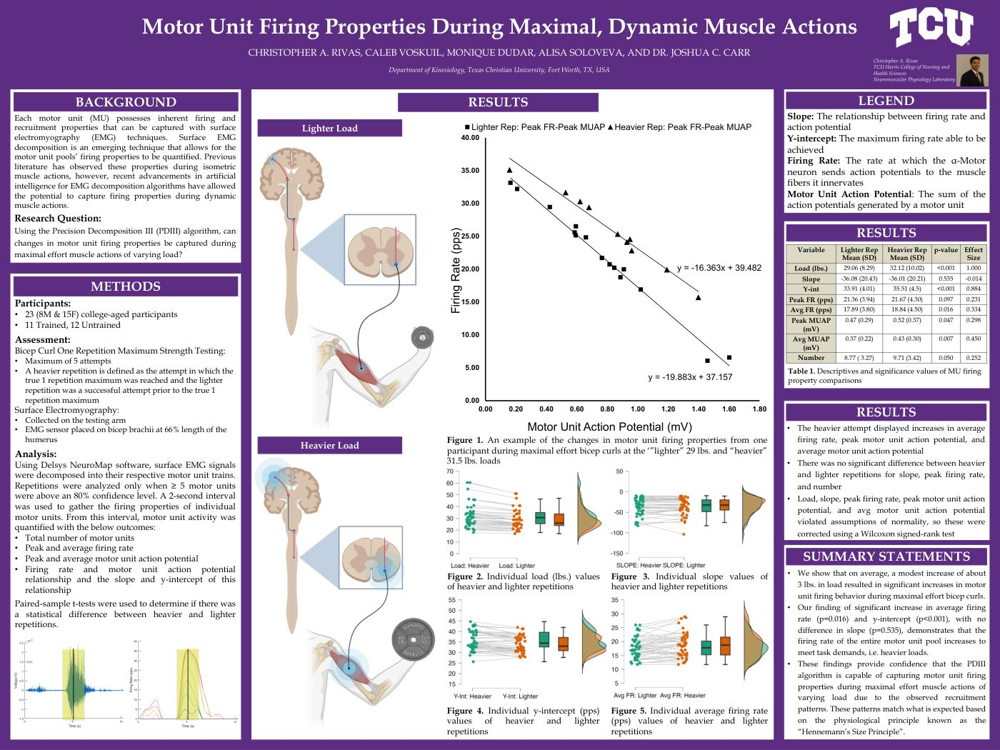

Motor Unit Firing Properties During Maximal, Dynamic Muscle Actions
Harris College Student Research Symposium, Texas Christian University ·
Department of Kinesiology, Texas Christian University, Fort Worth, TX, USA

Abstract
Background and Aim: Each motor unit possesses inherent firing and recruitment properties that can be captured with surface electromyography (EMG) techniques. Surface EMG decomposition is an emerging technique that allows for the motor unit pools’ firing properties to be quantified. Previous literature has observed these properties during isometric muscle actions, however, recent advancements in artificial intelligence for EMG decomposition algorithms have allowed the potential to capture firing properties during dynamic muscle actions. This study aims to assess the capability of Precision Decomposition III (PDIII) surface EMG motor unit decomposition during dynamic muscle actions.
Methods: During a single visit, 23 participants, 8 male and 15 female, performed a series of maximal-effort bicep curls. 12 participants were classified as untrained, and 11 participants were classified as trained. A Trignio® Galileo sensor was placed at 66% length of the humerus. 859 motor units were captured and decomposed using the Delsys NeuroMap Explorer software. A paired samples t-test compared firing properties of heavier repetitions to lighter repetitions using JASP statistics software.
Results: There was a significant difference in load (p<0.001), y-intercept (p<0.001), average firing rate (p=0.016), peak motor unit action potential (p=0.032), and average motor unit firing potential (p=0.023) between heavier repetitions and lighter repetitions. While peak firing rate and number of motor units were trending towards a difference,, there was no statistical difference (p=0.24 and p=0.051, respectively). There was no statistical difference in slope (p=0.48).
Conclusions: The significant increase in motor unit firing rate and action potential amplitude, without a significant difference in slope, as weight was increased between repetitions demonstrates that the entire motor unit pool increases to meet task demands independent of additional motor unit recruitment. This is the first description of motor unit firing properties during maximal intent, dynamic muscle actions, and corresponds with physiological principles established by “Henneman’s size principle”.